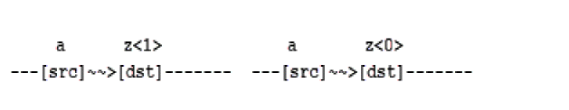
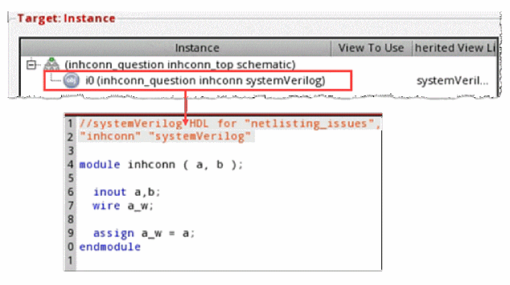
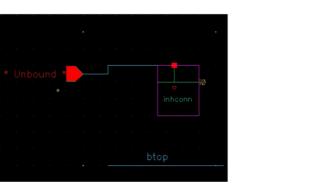
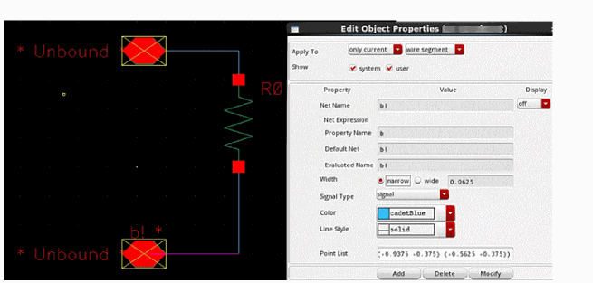
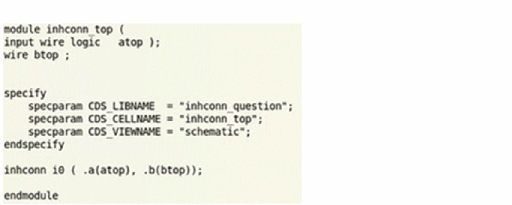

A
Configuration Flags
This appendix lists the flags, or SKILL variables, associated with the configurable fields in SystemVerilog Integration Environment forms. In addition to setting these flags through the forms, you can set the flags in a configuration file, such as si.env, or from Virtuoso CIW. The appendix also lists additional useful flags that you can set in a configuration file or from Virtuoso CIW.
This appendix includes the following topics:
- Configuration Flags for Design Details
- Configuring Flags for Netlist Generation
- Configuring Flags for Simulation
- Configuring Flags for Test Fixture Files
- Other Flags for Netlist Configuration
Important Notes
- SystemVerilog Integration Environment is based on NC Verilog Environment. Therefore, they share some common configuration flags. Both the environments also share some features and capabilities.
-
You can use various SKILL functions for formatting netlist output. These functions are specified as values for the
verilogFormatProcproperty and are common for NC Verilog Environment and SystemVerilog Integration Environment. - For details on the SKILL functions for formatting netlist output and common configuration flags, see the Virtuoso NC Verilog Environment User Guide. Also see the Digital Design Netlisting and Simulation SKILL Reference.
Configuration Flags for Design Details
The following table lists the fields in the main SystemVerilog Integration Environment form and their flags. For details, see “Initializing the Run Directory”.
| Flag | Field |
|---|---|
Configuring Flags for Netlist Generation
The following table lists the fields in the Netlist Setup form and their flags. For details, see “Configuring Options for Generating a Netlist”.
| Flag | Field |
|---|---|
|
If this field is enabled or its flag is set to
t, explicit netlisting is performed. If you run the netlister in standalone mode, you need to define this flag in the file si.env. Even when you use this option, instances of behavioral modules will still be connected implicitly. To get explicit connections for behavioral modules use the hnlVerilogNetlistBehavioralExplicit variable. |
|
Configuring Flags for Simulation
The following table lists the fields in the Simulation Setup form and their flags. For details, see “Configuring Options for Simulating a Design”.
| Flag | Field |
|---|---|
Configuring Flags for Test Fixture Files
The following table lists the fields in the Edit Test Fixture form and their flags. For details, see “Specifying the Testbench File and Stimulus File”.
| Flag | Field |
|---|---|
Other Flags for Netlist Configuration
The following table describes some other flags for netlist configuration.
| Flag | Field |
|---|---|
|
Sets the data type propagation.
By default, this flag is set to For an example of data type propagation, see “Overriding Hierarchical Data Type Propagation in a Design”. |
|
|
When enabled, allows specifying only the simSVPortPropertyList = '( ("analogLib" "res" "symbol" "vob_ana wreal1driver nil unPackedExplicit" ) ) input wreal1driver vob_ana [1023:0]; |
|
|
Enables the Verilog 95 non-ANSI SystemVerilog format support.
By default, SystemVerilog Integration Environment uses the Verilog-2001 SystemVerilog ANSI format. To enable the Verilog 95 non-ANSI SystemVerilog format support, set
For details on the |
|
|
Enables the capability of printing the assign statements for the unpacked arrays of a design in the netlist.
By default, this flag is set to For an example of a netlist with an assign statement, see Netlisting a Design Containing Packed and Unpacked Arrays. |
|
|
Enables the printing of concatenation statements instead of assignment statements for unpacked arrays. For example,
By default, this flag is set to |
|
|
Enables the printing of alias statements for signals connected to the patch element. For example, if signals connected to the patch element are |
|
|
A flag that specifies that the netlister uses aliasing between more than two signals. By default, it is set to
The following example shows aliasing between the signals

Here, if the source net is |
|
|
A flag that supports printing inherited connections from the schematic when the instances are bound to a SystemVerilog view.
Consider an instance

|
|
|
In the top cell, the instantiation of

However, an inherited connection is also created in the schematic view of

When the instance is bound to a SystemVerilog view and you enable the

|
|
Return to top